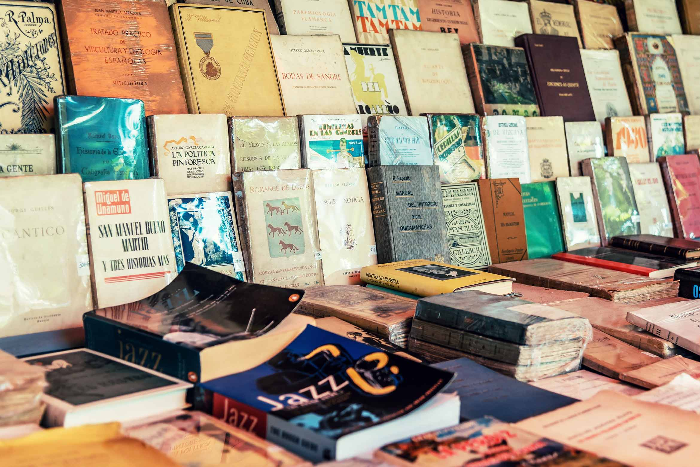

Noticias

Por qué se celebra el Día del Libro el 23 de abril
El lunes 23 de abril, y como cada año en esta fecha, se celebra el Día del Libro 2018. Una conmemoración
que se festeja en todo el mundo y que busca, sobre todo, fomentar la lectura, pero también defender
y proteger la industria editorial y los derechos de autor. Pese a todo, la instauración de un día
del libro mundial es bastante reciente.
Fue en 1995 cuando la
UNESCO aprobó, a propuesta de la Unión Internacional de Editores, la celebración del
Día Internacional del Libro y del Derecho de Autor. La fecha elegida no es fruto del azar sino
que se decidió al tratarse de una data trascendente en la historia de la literatura. Fue un 23 de
abril cuando Miguel de Cervantes y William Shakespeare murieron.
El Día del Libro en España
En España, la tradición de dedicar un día del año a los libros data de mucho antes. Alfonso XIII firmó
un Real Decreto el 6 de febrero de 1926 por el que se creaba oficialmente la
'Fiesta del Libro Español'. Se fijó como fecha la que por entonces se pensaba que había nacido
Cervantes: el 7 de octubre. Pero en 1930 se modificaría para coincidir con la fecha del fallecimiento
del escritor. Esto es, el 23 de abril.
La idea de la festividad había surgido del escritor y editor valenciano, afincado en Barcelona, Vicent
Clavel Andrés. Fue él quien hizo llegar su propuesta a la Cámara Oficial del Libro de Barcelona y
esta la que se haría eco de ella.
Hasta entonces en la Ciudad Condal existía la costumbre de que el hombre le regalase una rosa a la mujer
(la tradición se remonta al s.XV) por la festividad de Sant Jordi, patrón de Cataluña. Sin embargo,
tras la propuesta de Clavel se comenzaría a obsequiar también a los seres queridos con libros.
La celebración y el intercambio de ejemplares tuvo un rápido seguimiento en toda España, especialmente
en las ciudades que contaban con una universidad. Aunque en otras zonas terminaría por desaparecer
hasta la instauración de la fiesta por parte de la
UNESCO.
El Día del Libro en otros países
Países como Reino Unido o Irlanda celebran el
World Book Day, 'Día Mundial del Libro', cada primer jueves de marzo. Mientras que en Uruguay
celebran su día nacional cada 26 de mayo, fecha en la que se creó la primera biblioteca pública nacional.
Por su parte, Paraguay festeja el Día del Libro Paraguayo el 25 de junio.
Desde 2001, una ciudad es elegida como
Capital Mundial del Libro. Madrid fue la encargada de inaugurar esta representación que conlleva
la realización de actividades literarias durante todo un año. Desde entonces, Alejandría, Montreal,
Ámsterdam o Nueva Delhi han pasado por ello. En 2018, es Atenas la urbe elegida mientras que en 2019
ostentará el título Sharjah, en los Emiratos Árabes.